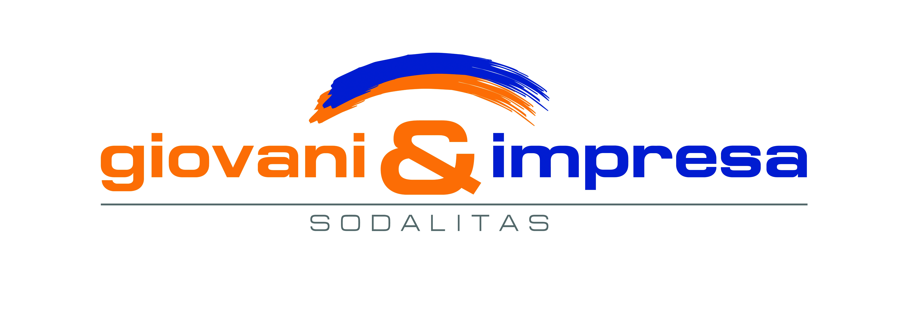

PCTO
Percorsi per le competenze trasversali e per l'orientamento
Giulia Luo 5C Gino Zappa Anno scolastico 2023-2024
GIOVANI E IMPRESA
Giovani e impresa è un corso realizzato dalla Fondazione Sodalitas per accompagnare gli studenti degli istituti scolastici superiori e delle università nel
passaggio dalla scuola al mondo del lavoro.

COMPETENZE ACQUISITE
- Capacità di negoziare
- Capacità di comunicare
- Capacità di problem solving
GRAZIE PER L'ATTENZIONE